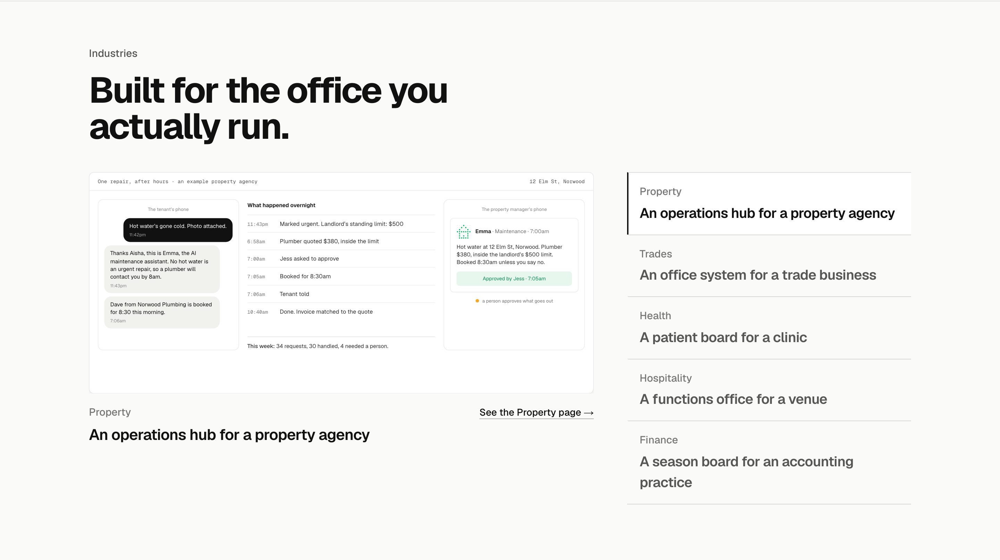
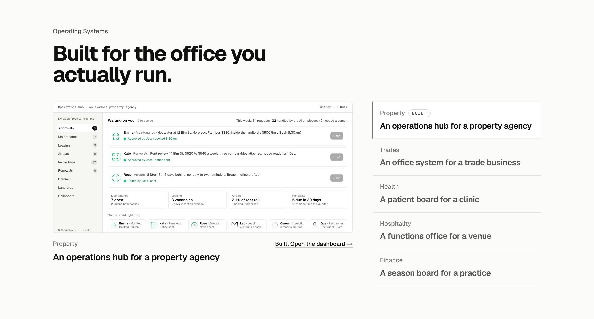
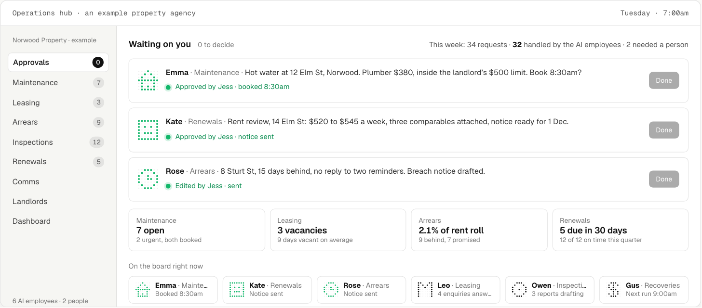
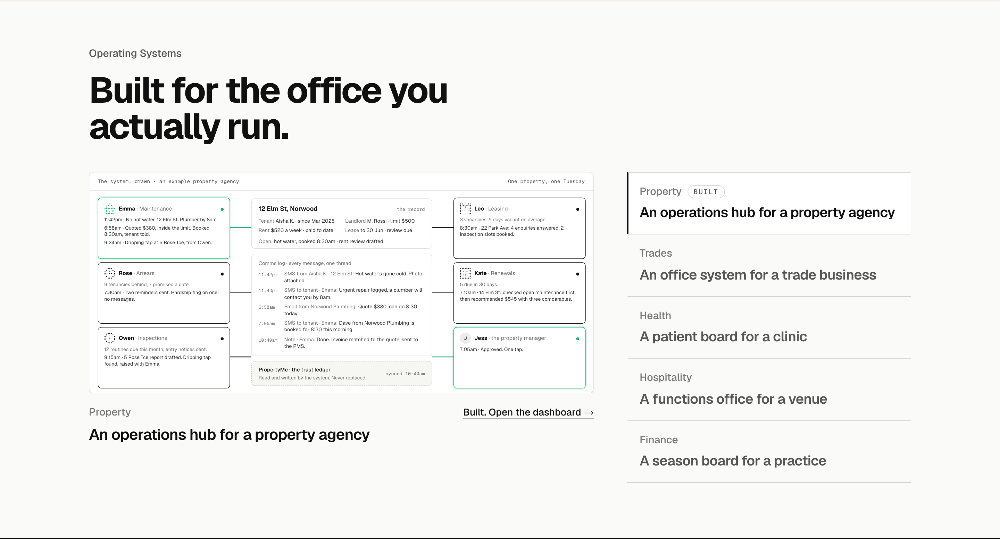
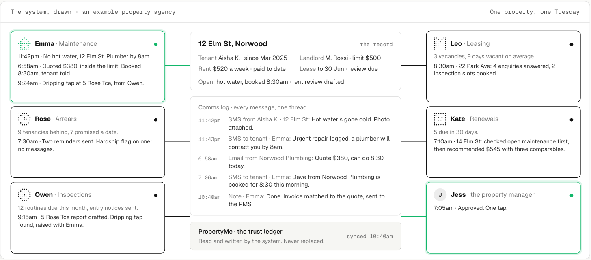
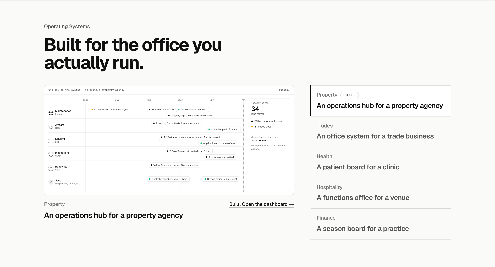
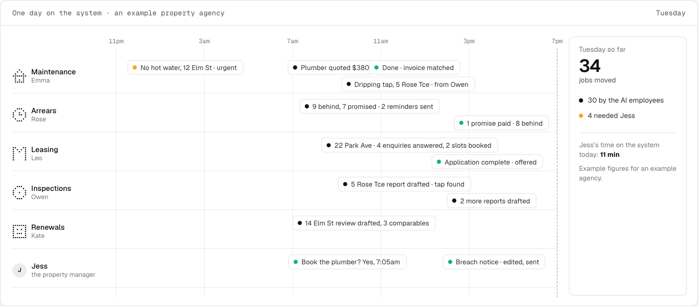

Operating Systems: Property three ways
Homepage section 4, renamed Operating Systems, with The Work folded in (built systems carry an open link and a Built tag). The screen now shows the entirely built system for the active industry. Property is drawn three ways from the research’s system section; the other four follow whichever you pick. Each shown in place at 1440, then the screen close up, in its finished state. All three play when they come into view at /lab/operating-systems. Every name, address and figure is made up.
TodayThe Industries section as built on the 15th: one job start to finish on a split screen. The AI employee again, not the system.

1. The hub, wholeThe app shell: nine modules down the side with their counts, the approvals home screen a principal opens at 7am (three decisions from Emma, Kate and Rose, approved one by one as it plays), the six AI employees on the board underneath. Closest to the first version the research scopes, and the one a visitor can picture logging into. Recommended.


2. The office mapOne property’s record in the middle with its comms log and the PMS it syncs to (never replaced); the six modules around it, each with its employee; a job travels the wires as it plays and the employees hand work to each other (Owen’s inspection raises a tap with Emma, Kate checks open maintenance before recommending a rent). The only one that shows the hand-offs, which is what makes it a system and not six tools.


3. One day on the systemEvery module as a lane across a Tuesday, from the 11:42pm text to the 3:30pm promise paid, a now-line moving across as it plays; the day’s count on the right with the minutes the person spent. The busiest picture and the most like a story.

